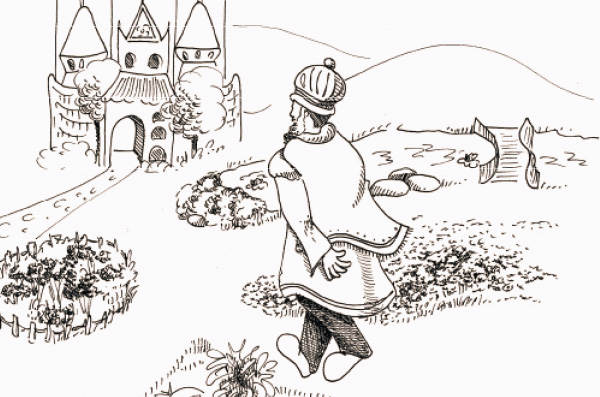

The Secret of the Dream
Did you ever hear of Purim in the month of Shevat? And the month of Cheshvan? And the month of Kislev? It is surprising but true; there are “Purims” like that. No, it’s not a joke. Since the wicked Haman’s days, there have been many evil people who tried to hurt the Jewish people. When Hashem made a miracle and their plots failed, the Yidden celebrated a “Purim” on those days. This is without costumes and reading a Megilla, but the joy is tremendous, just like on Purim.

The following is the story of such a Purim that took place in Istanbul, 400 years ago. The Sultan Suleiman was the ruler. He was very friendly with the rabbi of the Jewish community, Rabbi Moshe Hamon who was a big talmid chacham and yerei Shamayim. The Sultan respected him so much that he appointed him as his personal doctor.
Rabbi Moshe used his elevated position to help many Jews. Every time an evil minister came up with an idea of how to hurt the Jews, Rabbi Moshe would talk to the Sultan and convince him to cancel the decree.
This was a difficult period for the Jewish people. Many enemies of the Jews plotted against us. The most famous of these schemes was the libel that the Jews used the blood of gentiles to bake their matzos. Trying to explain that this is ridiculous did not help because anti-Semites are not willing to listen to reason.
With Hashem’s help, when they came up with a plot like this against the Jews of Istanbul, Rabbi Moshe succeeded in having the decree canceled. He spoke with the king and asked him to establish a law that from now on, only the Sultan would decide whether it is permissible to hurt Jews or not. This way, the minor rulers would not be allowed to plot against the Jews without the Sultan’s approval. The Sultan agreed and the situation became calmer and the Jews were able to live their lives more peacefully. But this did not last long.
One night, as the Sultan was asleep, he had a frightening dream. In his dream he heard a voice proclaiming: “Suleiman, Suleiman, wake up! I am a prophet who was sent to you from heaven and I order you to expel the Jews who do not want to convert to Islam. Whoever remains and does not convert, should be killed. Get up Suleiman, get up and carry out this order immediately. If you don’t, your end will be bitter!”
The Sultan woke up in a cold sweat. The dream seemed so real and was so frightening. He did not know what to do.
At daybreak, he sent for Rabbi Moshe and told him the dream. Rabbi Moshe tried to reassure him and said, “Dreams are nonsense. Ignore it. Don’t worry about it.”
The rabbi calmed him down somewhat and he went out to breathe fresh air in the courtyard. He tried to forget the frightening dream.
That night, the Sultan was sleeping when he heard the scary voice once again. “Suleiman, Suleiman, I order you to expel the Jews who do not convert. Otherwise, your end will be bitter!”
Suleiman jumped out of bed, more frightened than ever. As soon as dawn broke, he called for Rabbi Moshe. “I am terrified. I think I will have no choice but to carry out the instructions of the prophet. I suggest that you, my friend, leave the city before it is too late.”
Once again, Rabbi Moshe tried to calm down the Sultan, but he was too distraught. With great effort, Rabbi Moshe managed to convince him not to rush into making a decision.
“Since I highly respect you, Rabbi Moshe, I am willing to wait another day, but if the dream occurs a third time, I will have no choice … I am afraid for my life.”
Rabbi Moshe left the king’s room very worried. He murmured chapters of T’hillim and prayed that Hashem save the Jews from their enemies.
Like Mordechai in his generation, Rabbi Moshe knew that t’shuva, t’filla and tz’daka are what avert the evil decree. He quickly gathered the leaders of the community in Istanbul and told them about the decree that hovered over their heads. They decided to call for a public fast and all the Jews gathered in the shul for t’filla from the depths of their hearts.
Toward evening, Rabbi Moshe went to Suleiman as he continued murmuring words of prayer to Hashem.
On his way, he met an old, venerable looking Jew with a radiant smile. “Greetings,” said the old man. “Why do you look so sad? Is someone bothering you?”
“Yes, a terrible decree hovers over our heads. The Sultan wants to expel all the Jews from the city. Oy, everyone is fasting and praying to Hashem.”
“G-d in heaven hears your prayers and will save you,” said the old man. “I suggest that you check what is happening behind the secret door in the Sultan’s bedroom.”
Rabbi Moshe was greatly encouraged and was filled with joy. He felt that Hashem had guided him on the correct path. “Thank you!” he said but he had barely finished talking and the old man had disappeared. Rabbi Moshe looked right, he looked left, but did not see a living soul. “It must have been Eliyahu HaNavi who came to save us,” he thought, as he confidently walked to the Sultan’s palace.
“Tell me, your highness, is there a secret door in your bedroom?” asked Rabbi Moshe in a whisper.
The Sultan thought for a moment and then remembered that his father had told him about a secret door in the bedroom. In the case of emergency he would be able to flee the palace.
“Yes, yes,” said the Sultan in surprise.
“Then I recommend that you place guards behind the secret door throughout the night so they will protect you.”
The Sultan was most willing to do as Rabbi Moshe advised.
That night, the Sultan slept while Rabbi Moshe and the guards stood silently behind the secret door. Then they heard the voice of the “prophet” calling, “Suleiman, Suleiman.”
But this time, before the “prophet” had a chance to say another word, the guards swung open the secret door and grabbed the “prophet” who was none other than the prime minister who was a sworn enemy of the Jews.
The Sultan, who had woken up, was furious and ordered him to be killed. And the Jews rejoiced. From then on, this day was established as “Purim Istanbul” which Jews of this community celebrate every year.
Beis Moshiach (staff). "The Secret of the Dream." Beis Moshiach, no. 919 (March 12, 2014).